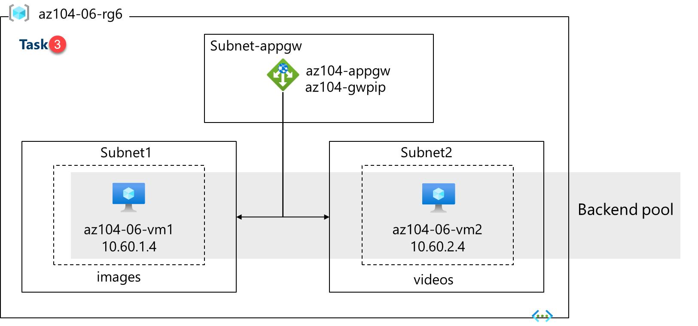

Lab - Implement Network Traffic Management¶
Lab Introduction¶
In this lab, you learn how to configure and test a public Load Balancer and an Application Gateway.
This lab requires an Azure subscription. Your subscription type may affect the availability of features in this lab. You may change the region, but the steps are written using East US.
Estimated Timing: 50 Minutes¶
Lab Scenario¶
Adamantus Technologies has a public website. You need to load balance incoming public requests across different virtual machines. You also need to provide images and videos from different virtual machines. You plan on implementing an Azure Load Balancer and an Azure Application Gateway. All resources are in the same region.
Interactive Lab Simulations¶
There are interactive lab simulations that you might find useful for this topic. The simulation lets you to click through a similar scenario at your own pace. There are differences between the interactive simulation and this lab, but many of the core concepts are the same. An Azure subscription is not required.
- Create and configure and Azure load balancer. Create a virtual network, backend servers, load balancer, and then test the load balancer.
- Deploy Azure Application Gateway. Create an application gateway, create virtual machines, create the backend pool, and test the gateway.
- Implement traffic management. Implement complete hub and spoke network including virtual machines, virtual networks, peering, load balancer, and application gateway.
Job Skills¶
- Task 1: Use a template to provision an infrastructure.
- Task 2: Configure an Azure Load Balancer.
- Task 3: Configure an Azure Application Gateway.
Task 1: Use a Template to Provision an Infrastructure¶
In this task, you will use a template to deploy one virtual network, one network security group, and two virtual machines.
-
⬇️ Download the ARM Template for Lab also ⬇️ Download the Parameters ARM Template for this Lab
-
Sign in to the Azure portal -
https://portal.azure.com. -
Search for and select
Deploy a custom template. -
On the custom deployment page, select Build your own template in the editor.
-
On the edit template page, select Load file.
-
Locate and select the ARM Template file that you have downloaded and then select Open.
-
Select Save.
-
Select Edit parameters and load the \Parameter file that you have downloaded.
-
Select Save.
-
Use the following information to complete the fields on the custom deployment page, leaving all other fields with the default value.
Setting Value Subscription your Azure subscription Resource group az104-rg6(If necessary, select Create new)Password Provide a secure password Note: If you receive an error that the VM size is unavailable, select a SKU that is available in your subscription and has at least 2 cores.
-
Select Review + Create and then select Create.
Note: Wait for the deployment to complete before moving to the next task. The deployment should take approximately 5 minutes.
Note: Review the resources being deployed. There will be one virtual network with three subnets. Each subnet will have a virtual machine.
Task 2: Configure an Azure Load Balancer¶
In this task, you implement an Azure Load Balancer in front of the two Azure virtual machines in the virtual network. Load Balancers in Azure provide layer 4 connectivity across resources, such as virtual machines. Load Balancer configuration includes a front-end IP address to accept connections, a backend pool, and rules that define how connections should traverse the load balancer.
Architecture Diagram - Load Balancer¶
Note: Notice the Load Balancer is distributing across two virtual machines in the same virtual network.
-
In the Azure portal, search for and select
Load balancersand, on the Load balancers blade, click + Create. -
Create a load balancer with the following settings (leave others with their default values) then click Next: Frontend IP configuration:
Setting Value Subscription your Azure subscription Resource group az104-rg6 Name az104-lbRegion The same region that you deployed the VMs SKU Standard Type Public Tier Regional -
On the Frontend IP configuration tab, click Add a frontend IP configuration and use the following settings:
Setting Value Name az104-feIP type IP address Gateway Load Balancer None Public IP address Select Create new (use the instructions in the next step) -
On the Add a public IP address popup, use the following settings before clicking OK and then Add. When completed click Next: Backend pools.
Setting Value Name az104-lbpipSKU Standard Tier Regional Assignment Static Routing Preference Microsoft network Note: The Standard SKU provides a static IP address. Static IP addresses are assigned with the resource is created and released when the resource is deleted.
-
On the Backend pools tab, click Add a backend pool with the following settings (leave others with their default values). Click + Add (twice) and then click Next: Inbound rules.
Setting Value Name az104-beVirtual network az104-06-vnet1 Backend Pool Configuration NIC Click Add to add a virtual machine az104-06-vm0 check the box az104-06-vm1 check the box -
As you have time, review the other tabs, then click Review + create. Ensure there are no validation errors, then click Create.
-
Wait for the load balancer to deploy then click Go to resource.
Add a Rule to determine how incoming traffic is distributed
-
In the Settings blade, select Load balancing rules.
-
Select + Add. Add a load balancing rule with the following settings (leave others with their default values). As you configure the rule use the informational icons to learn about each setting. When finished click Save.
Setting Value Name az104-lbruleIP Version IPv4 Frontend IP Address az104-fe Backend pool az104-be Protocol TCP Port 80Backend port 80Health probe Create new Name az104-hpProtocol TCP Port 80Interval 5Close the create health probe window Save Session persistence None Idle timeout (minutes) 4TCP reset Disabled Floating IP Disabled Outbound source network address translation (SNAT) Recommended -
Select Frontend IP configuration from the Load Balancer page. Copy the public IP address.
-
Open another browser tab and navigate to the IP address. Verify that the browser window displays the message Hello World from az104-06-vm0 or Hello World from az104-06-vm1.
-
Refresh the window to verify the message changes to the other virtual machine. This demonstrates the load balancer rotating through the virtual machines.
Note: You may need to refresh more than once or open a new browser window in InPrivate mode.
Task 3: Configure an Azure Application Gateway¶
In this task, you implement an Azure Application Gateway in front of two Azure virtual machines. An Application Gateway provides layer 7 load balancing, Web Application Firewall (WAF), SSL termination, and end-to-end encryption to the resources defined in the backend pool. The Application Gateway routes images to one virtual machine and videos to the other virtual machine.
Architecture Diagram - Application Gateway¶
Note: This Application Gateway is working in the same virtual network as the Load Balancer. This may not be typical in a production environment.

-
In the Azure portal, search and select
Virtual networks. -
On the Virtual networks blade, in the list of virtual networks, click az104-06-vnet1.
-
On the az104-06-vnet1 virtual network blade, in the Settings section, click Subnets, and then click + Subnet.
-
Add a subnet with the following settings (leave others with their default values).
Setting Value Name subnet-appgwStarting address 10.60.3.224Size /27 -
Click Save
Note: This subnet will be used by the Azure Application Gateway. The Application Gateway requires a dedicated subnet of /27 or larger size.
-
In the Azure portal, search and select
Application gatewaysand, on the Application Gateways blade, click + Create. -
On the Basics tab, specify the following settings (leave others with their default values):
Setting Value Subscription your Azure subscription Resource group az104-rg6Application gateway name az104-appgwRegion The same Azure region that you used in Task 1 Tier Standard V2 Enable autoscaling No Minimum instance count 2Availability zone 1 (default) HTTP2 Disabled Virtual network az104-06-vnet1 Subnet subnet-appgw (10.60.3.224/27) -
Click Next: Frontends > and specify the following settings (leave others with their default values). When complete, click OK.
Setting Value Frontend IP address type Public Public IP address Add new Name az104-gwpipAvailability zone 1 Note: The Application Gateway can have both a public and private IP address.
-
Click Next : Backends > and then Add a backend pool. Specify the following settings (leave others with their default values). When completed click Add.
Setting Value Name az104-appgwbeAdd backend pool without targets No Virtual machine az104-06-nic1 (10.60.1.4) Virtual machine az104-06-nic2 (10.60.2.4) -
Click Add a backend pool. This is the backend pool for images. Specify the following settings (leave others with their default values). When completed click Add.
Setting Value Name az104-imagebeAdd backend pool without targets No Virtual machine az104-06-nic1 (10.60.1.4) -
Click Add a backend pool. This is the backend pool for video. Specify the following settings (leave others with their default values). When completed click Add.
Setting Value Name az104-videobeAdd backend pool without targets No Virtual machine az104-06-nic2 (10.60.2.4) -
Select Next : Configuration > and then Add a routing rule. Complete the information.
Setting Value Rule name az104-gwrulePriority 10Listener name az104-listenerFrontend IP Public IPv4 Protocol HTTP Port 80Listener type Basic -
Move to the Backend targets tab. Select Add after completing the basic information.
| Setting | Value |
|---|---|
| Backend target | az104-appgwbe |
| Backend settings | az104-http (create new) |
Note: Take a minute to read the information about Cookie-based affinity and Connection draining.
-
In the Path-based routing section, select Add multiple targets to create a path-based rule. You will create two rules. Click Add after the first rule and then Add after the second rule.
Rule - routing to the images backend
Setting Value Path /image/*Target name imagesBackend settings az104-http Backend target az104-imagebeRule - routing to the videos backend
Setting Value Path /video/*Target name videosBackend settings az104-http Backend target az104-videobe -
Be sure to Save and check your changes, then select Next : Tags >. No changes are needed.
-
Select Next : Review + create > and then click Create.
Note: Wait for the Application Gateway instance to be created. This will take approximately 5-10 minutes. While you wait consider reviewing some of the self-paced training links at the end of this page.
-
After the application gateway deploys, search for and select az104-appgw.
-
In the Application Gateway resource, in the Monitoring section, select Backend health.
-
Ensure both servers in the backend pool display Healthy.
-
On the Overview blade, copy the value of the Frontend public IP address.
-
Start another browser window and test this URL -
http://<frontend ip address>/image/. -
Verify you are directed to the image server (vm1).
-
Start another browser window and test this URL -
http://<frontend ip address>/video/. -
Verify you are directed to the video server (vm2).
Note: You may need to refresh more than once or open a new browser window in InPrivate mode.
Cleanup your Resources¶
If you are working with your own subscription take a minute to delete the lab resources. This will ensure resources are freed up and cost is minimized. The easiest way to delete the lab resources is to delete the lab resource group.
- In the Azure portal, select the resource group, select Delete the resource group, Enter resource group name, and then click Delete.
- Using Azure PowerShell,
Remove-AzResourceGroup -Name resourceGroupName. - Using the CLI,
az group delete --name resourceGroupName.
Key Takeaways¶
Congratulations on completing the lab. Here are the key points for this lab.
- Azure Load Balancer is an excellent choice for distributing network traffic across multiple virtual machines at the transport layer (OSI layer 4 - TCP and UDP).
- Public Load Balancers are used to load balance internet traffic to your VMs. An internal (or private) load balancer is used where private IPs are needed at the frontend only.
- The Basic load balancer is for small-scale applications that don't need high availability or redundancy. The Standard load balancer is for high performance and ultra-low latency.
- Azure Application Gateway is a web traffic (OSI layer 7) load balancer that enables you to manage traffic to your web applications.
- The Application Gateway Standard tier offers all the L7 functionality, including load balancing, The WAF tier adds a firewall to check for malicious traffic.
- An Application Gateway can make routing decisions based on additional attributes of an HTTP request, for example URI path or host headers.
Address: H-34, Ground Floor, Sector 63, Noida, Uttar Pradesh
Email: info@ceekh.com